Аннотации типов и документация кода · МДК.01.01 · разработка программных модулей
Глава 4.14
Файлы .rst, automodule
и sphinx-apidoc
В этой главе на сайте «Отчёта кафе» появляются все пакеты проекта. Сначала пишется своя страница «Запуск и проверки» в разметке reStructuredText и подключается к оглавлению. Затем страницы для всех модулей создаёт программа sphinx-apidoc, и по дороге исправляются два её предупреждения. Затем — как держать эти страницы в согласии с кодом, когда модули добавляют и удаляют, и как добавить на главную ссылки на алфавитный указатель и поиск. Каждый шаг показан кадром.
- Категория
- Пошаговая работа
- Время
- Около 60 минут
- Инструменты
- reStructuredText,
sphinx-apidoc - Результат
- Страница о запуске и страницы всех пакетов
app
После главы 4.13 на сайте один модуль из десяти — «Заказы смены», и его страница orders.rst написана руками. О том, как запустить проект, на сайте ничего нет. В этой главе появляется своя страница о запуске, а страницы для всех модулей создаёт программа.

Все команды главы выполняются в терминале, где окружение активировано, — в начале приглашения стоит (.venv), как после шага «Активируйте окружение» в главе 4.12, §3. Новый терминал VS Code открывается без активации: в нём сначала выполните source .venv/bin/activate.venv\Scripts\Activate.ps1 в PowerShell.
§1Своя страница в reStructuredText
reStructuredText — разметка текста знаками, которые понятны и без обработки: заголовок подчёркнут чертой, пункт списка начинается со звёздочки, код выделен двойными обратными кавычками. Sphinx по этим знакам строит HTML. Похоже устроен Markdown в README; в reStructuredText, кроме того, есть директивы — команды сборщику вроде automodule и toctree.
Разметка разобрана на странице, которая нужна на сайте любого проекта: как его запустить и проверить. Три шага: файл, сборка, страница.
Создайте docs/source/usage.rst
Правая кнопка на docs/source → New File → usage.rst. Наберите текст:
Запуск и проверки ================= Программа читает файл смены ``data/smena.csv`` и печатает выручку по каждому официанту. Суммы в файле записаны в копейках. Установка --------- 1. Создайте окружение и установите зависимости. 2. Запустите программу из корня проекта. .. code-block:: console python -m venv .venv pip install -r requirements.txt python main.py Проверки -------- * ``python -m pytest -v`` — двенадцать тестов; * ``mypy app`` — проверка типов; * ``ruff check app`` — проверка докстрингов. .. note:: Расчёт выручки описан в функции :func:`app.services.orders.revenue_by_waiter`, формат суммы — в :func:`app.utils.formatter.format_kopeks`. Формат файла смены описан на странице `документации модуля csv <https://docs.python.org/3/library/csv.html>`_.
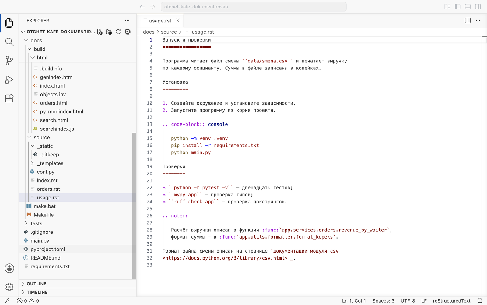
.. code-block:: и .. note:: сдвинуты на три пробела и поэтому входят в блок.Что означает каждый элемент:
Запуск и проверкис чертой=— заголовок страницы.УстановкаиПроверкис чертой-— заголовки разделов: другой знак черты — следующий уровень.- Строки подряд — один абзац; абзацы разделяют пустой строкой.
``data/smena.csv``— код в строке: две обратные кавычки с каждой стороны.1.и*— нумерованный и маркированный списки; перед списком и после него — пустая строка... code-block:: console— блок команд. После директивы пустая строка, затем команды с отступом. Слово после::— язык подсветки... note::— врезка «Примечание».:func:`app.services.orders.revenue_by_waiter`— роль, разметка внутри строки. Роль:func:делает ссылку на описание функции на сайте; для класса —:class:, для модуля —:mod:.`текст <адрес>`_— ссылка на внешний сайт; подчёркивание в конце обязательно.
Соберите
sphinx-build -M html docs/source docs/build -q
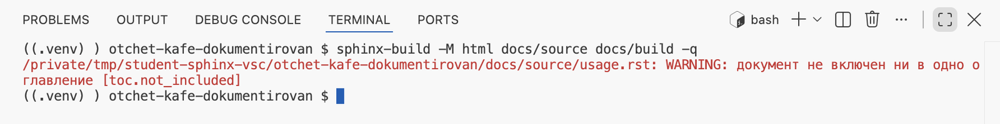
usage.rst: WARNING: документ не включен ни в одно оглавление. Страница собрана, но в оглавлении её нет, и с главной на неё не попасть.§2Страница в оглавлении
Связи между страницами задаёт директива toctree в index.rst. Порядок имён в ней — порядок пунктов в «Навигации». Три шага.
Добавьте usage в оглавление
В index.rst впишите usage над строкой orders, с тем же отступом.
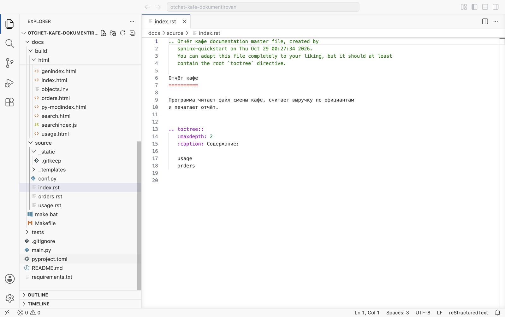
usage, затем orders. Имена пишутся без .rst и считаются от папки docs/source.Соберите
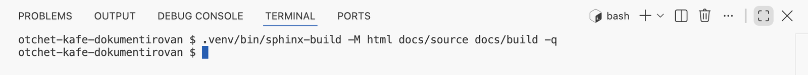
Откройте страницу «Запуск и проверки»

revenue_by_waiter() откроет её описание. Последняя строка — ссылка на документацию Python.§3Страницы для всех модулей: sphinx-apidoc
На сайте описан один модуль из десяти, и его страница orders.rst написана руками. Писать так страницу на каждый модуль долго, и новый модуль легко забыть. Эти файлы создаёт sphinx-apidoc — программа, которая ставится вместе со Sphinx.
Ассоциация: опись склада
Кладовщик обходит стеллажи и составляет опись: на каждый стеллаж — лист, на листе — перечень полок. Что лежит в коробках, он не смотрит.
sphinx-apidoc обходит папки app: на каждый пакет — файл .rst, в нём директива automodule на каждый модуль. Докстринги — содержимое коробок — читает autodoc при сборке.
Четыре шага: запуск программы, просмотр файла, оглавление, сборка.
Запустите sphinx-apidoc
sphinx-apidoc -o docs/source/api app. Ключ -o — папка для файлов, последний аргумент — папка пакета.
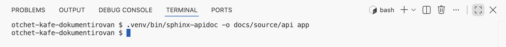
Откройте файл пакета app.services
В проводнике появилась папка docs/source/api. Откройте в ней app.services.rst.
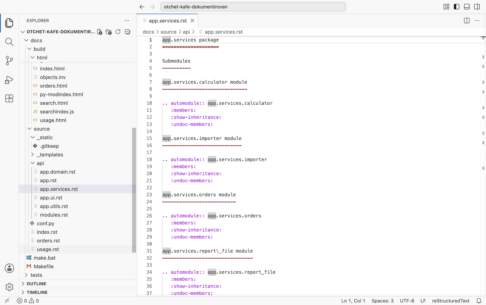
app и четыре вложенных, плюс modules.rst — оглавление этого дерева. Справа — app.services.rst: на каждый модуль заголовок … module и директива automodule с тремя параметрами — :members:, :show-inheritance:, :undoc-members:. Заголовки на английском: их пишет программа.Замените orders на api/modules в оглавлении
Модуль orders теперь описан в файле пакета, а ручная страница описала бы его второй раз. Удалите docs/source/orders.rst и в index.rst замените строку orders на api/modules.
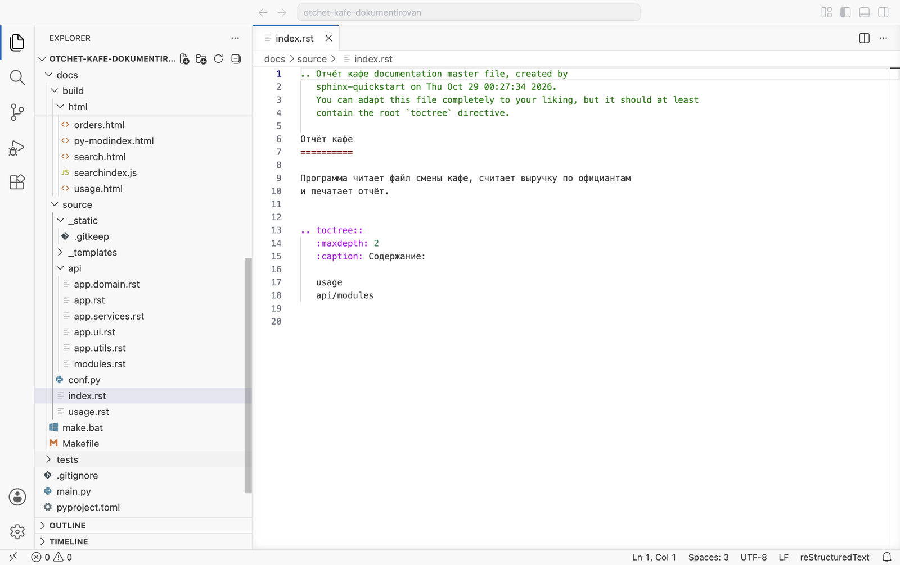
usage и api/modules. В проводнике в docs/source файла orders.rst больше нет.Соберите всё заново
Страница удалена, поэтому сборка нужна полная: sphinx-build -M html docs/source docs/build -q -E.
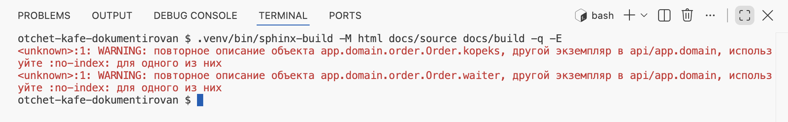
повторное описание объекта app.domain.order.Order.kopeks и то же для Order.waiter; второй экземпляр — в той же странице api/app.domain. Поля класса Order описаны дважды.§4Повторное описание полей
Order — dataclass с полями waiter и kopeks. В его докстринге поля описаны разделом Attributes:, как в главе 4.9. На страницу они попадают двумя путями: napoleon превращает раздел Attributes: в описания полей, а параметр :undoc-members: выводит те же поля ещё раз — по аннотациям waiter: str и kopeks: int.

app.domain сейчас. Поля описаны в поле «Переменные» и ниже повторены подписями kopeks: int, waiter: str. Строку «Базовые классы: object» выводит параметр :show-inheritance:.Два шага: настройка napoleon и сборка.
Добавьте napoleon_use_ivar
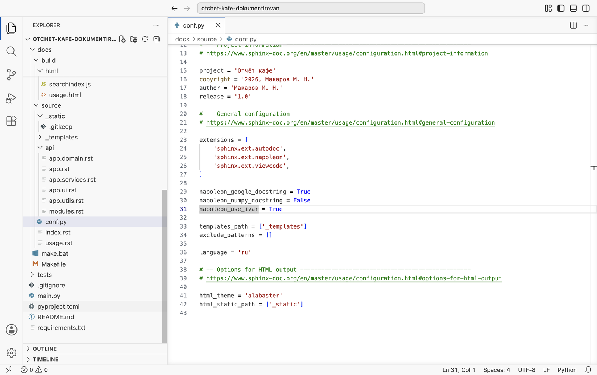
napoleon_use_ivar = True. С ней раздел Attributes: становится полем «Переменные» в описании класса, как «Параметры» у функции, и отдельных описаний полей не создаёт.Соберите

§5Только описанные функции
Предупреждений нет, но на странице остались подписи kopeks: int и строка «Базовые классы». Их выводят параметры :undoc-members: и :show-inheritance:. Файлы api меняют повторным запуском программы: ручные правки в них пропадут при следующем запуске. Набор параметров задаётся при запуске — переменной окружения SPHINX_APIDOC_OPTIONS. Три шага.
Пересоздайте файлы с одним :members:
SPHINX_APIDOC_OPTIONS=members sphinx-apidoc -f -M -o docs/source/api app$env:SPHINX_APIDOC_OPTIONS = "members"; sphinx-apidoc -f -M -o docs/source/api app
SPHINX_APIDOC_OPTIONS=members— у директив будет один параметр:members:. Запись перед командой задаёт переменную только для этого запуска.В PowerShell переменная задаётся отдельной командой и действует до закрытия терминала.-f— перезаписать существующие файлы; без него программа оставит прежние.-M— описание пакета ставить в начало страницы, перед модулями.
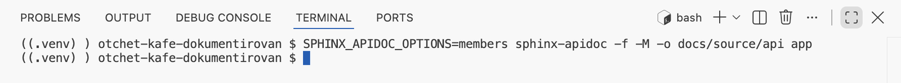
У программы есть ключ --automodule-options с тем же назначением, но в Sphinx 9.1.1 он на файлы не влияет: проверено, что после него в файлах остаются все три параметра.
Сравните файл пакета
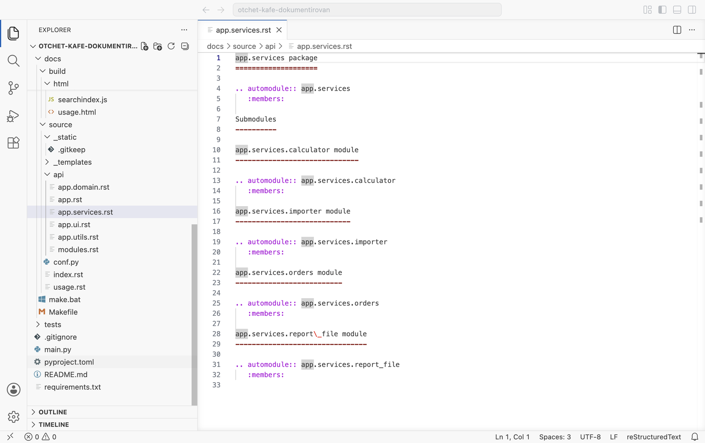
app.services.rst после пересоздания. В начале — директива для самого пакета (ключ -M), у каждой директивы один параметр :members:.Соберите и проверьте страницу
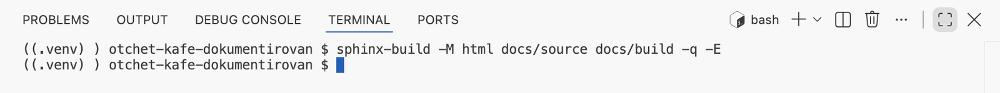

app.domain: сверху описание пакета, у Order поля описаны один раз — в поле «Переменные», с типами из аннотаций. Подписей без описания и строки «Базовые классы» нет.Страницы всех пакетов созданы командой SPHINX_APIDOC_OPTIONS=members sphinx-apidoc -f -M -o docs/source/api app и подключены строкой api/modules. В conf.py — napoleon_use_ivar = True. Сборка с -q -E ничего не печатает.
§6Когда меняется состав модулей
Файлы в api — снимок состава пакета на момент запуска. Если модуль добавили или удалили, команду запускают снова, с -f. Ниже это пройдено на модуле, который сначала появляется, а потом исчезает. Пять шагов.
Добавьте модуль app/utils/percent.py
В модуле две функции: share с докстрингом и rounded без него.
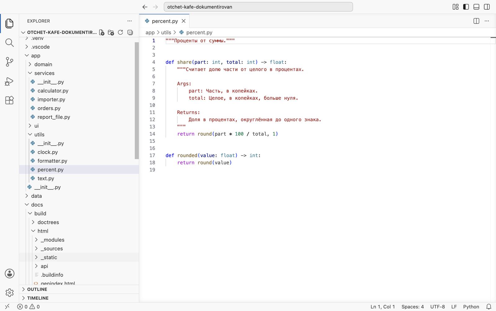
4–14 — share с разделами Args и Returns. Строки 17–18 — rounded без описания.Проверьте модуль Ruff
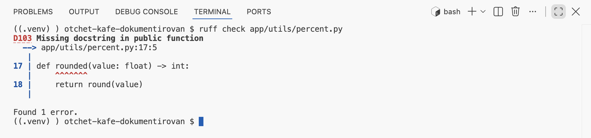
rounded: D103 Missing docstring in public function, строка 17.Это замечание важно и для сайта. С параметром :members: на сайт попадают только функции с докстрингом; rounded будет пропущена без предупреждения. Поэтому перед сборкой сайта ruff check app должен проходить.
Пересоздайте страницы
Та же команда, что в §5. На кадре после неё выведены строки файла app.utils.rst, где встречается percent.
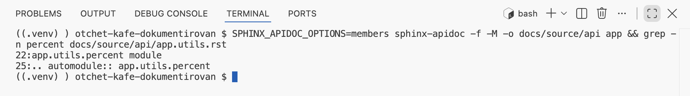
app.utils.rst появились заголовок app.utils.percent module и директива для него. После сборки на странице пакета будет функция share.Удалите модуль и запустите apidoc без -f
Удалите percent.py, выполните sphinx-apidoc -o docs/source/api app без -f и соберите.
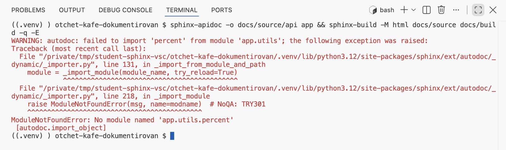
-f программа файлы не перезаписала, директива для удалённого модуля осталась. Сборка: failed to import 'percent' from module 'app.utils', последняя строка — No module named 'app.utils.percent'.Повторите с -f
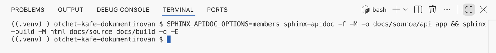
-f файлы пересозданы по нынешнему составу пакета, сборка ничего не печатает.Команду пересоздания удобно записать в README проекта: её запускают после каждого добавления, переименования или удаления модуля.
§7Указатель и поиск
Кроме страниц из оглавления, Sphinx при каждой сборке строит ещё три: алфавитный указатель genindex.html, список модулей py-modindex.html и поиск search.html. Их видно в проводнике в docs/build/html, но ссылок на указатель и список модулей на сайте нет: мастер Sphinx 9 их не добавляет. Пока на сайте был один модуль, это было незаметно; теперь, когда описан весь пакет, без указателя функцию приходится искать по страницам пакетов. Ссылки добавляют в index.rst сами. Пять шагов.
Добавьте раздел «Указатели» в index.rst
В конец index.rst, после оглавления, допишите раздел из трёх пунктов:
Указатели --------- * :ref:`genindex` * :ref:`modindex` * :ref:`search`
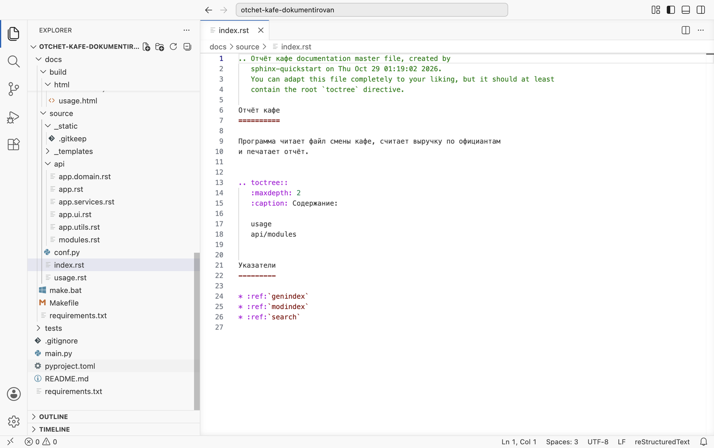
21–26: заголовок раздела с чертой - и три пункта. Роль :ref: — ссылка на место в документации; genindex, modindex и search — имена трёх страниц, которые Sphinx строит сам. Подписи ссылок он тоже поставит сам, на языке из conf.py.Соберите
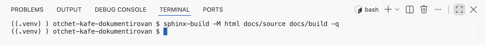
Найдите ссылки на главной странице
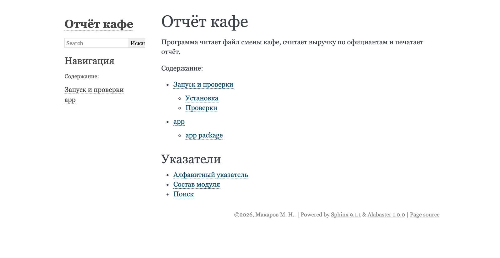
Откройте алфавитный указатель

add() (метод app.domain.shift.Shift). Указатель помогает, когда известно имя функции, а модуль — нет.Найдите слово через поиск
Введите слово в поле поиска в колонке слева и нажмите Enter — или перейдите по ссылке «Поиск» из раздела «Указатели».

searchindex.js.Сайт полный, но он в простой встроенной теме и открывается только с вашего диска. В главе 4.15 сайт получает тему Furo и публикуется на GitHub Pages.
§8Проверьте себя
Чем директива отличается от роли?
Директива — блок: строка .. имя:: и текст с отступом под ней. Роль — разметка внутри строки: :func:`имя`.
Страница собрана, но в навигации её нет. Что проверить?
Есть ли её имя без .rst в toctree. Сборка в этом случае печатает документ не включен ни в одно оглавление.
Что делает sphinx-apidoc?
Создаёт файлы .rst с директивами automodule, по одному на пакет. Докстринги читает autodoc при сборке.
Откуда «повторное описание объекта Order.kopeks»?
Поле описано разделом Attributes: через napoleon и ещё раз параметром :undoc-members:. Убирает повтор napoleon_use_ivar = True.
Почему после удаления модуля нужен ключ -f?
Без него apidoc не перезаписывает файлы, директива для удалённого модуля остаётся, и сборка печатает failed to import.
Страница / =====
Раздел / -----
``код``
:func:`app.….имя`
.. code-block:: console
.. note::
usage
api/modules
SPHINX_APIDOC_OPTIONS=members
sphinx-apidoc -f -M -o docs/source/api app
napoleon_use_ivar = True
Итог главы
Свою страницу пишут в reStructuredText: заголовки с чертой, списки, блок code-block, врезка note, ссылки на функции ролью :func:. Страница видна на сайте, если её имя стоит в toctree. Страницы для всех модулей создаёт sphinx-apidoc; в курсе её запускают с SPHINX_APIDOC_OPTIONS=members и ключами -f -M, а дерево подключают строкой api/modules. Повтор полей dataclass убирает napoleon_use_ivar = True. После добавления или удаления модуля команду повторяют с -f, а перед сборкой проверяют Ruff: функции без докстринга на сайт не попадают. Ссылки на алфавитный указатель, список модулей и поиск добавляют в index.rst ролью :ref: — сам мастер их не пишет. В главе 4.15 сайт получает новую тему и публикуется на GitHub Pages.
- Разметка reStructuredText — Sphinx, reStructuredText Primer.
- Директивы
toctree,code-block,note— Sphinx, Directives; роли — The Python Domain. - Параметры
automodule— sphinx.ext.autodoc;napoleon_use_ivar— sphinx.ext.napoleon. - Ключи и переменная окружения — sphinx-apidoc.
- Кадры и поведение ключа
--automodule-optionsпроверены на Sphinx 9.1.1 сценариямиshots/shoot_sphinx.pyиshots/sphinx_run.py.